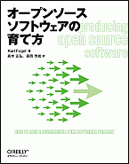

|  |
オープンソースソフトウェア の育て方フリーソフトウェアプロジェクト を成功させるコツKarl Fogel |
このサイトについて
このページは、「オープンソースソフトウェアの育て方」 (原著：Producing Open Source Software) のサポートページです。ダウンロード情報、購入情報、正誤表等の情報を公開しています。
ダウンロード
このサイトの内容を様々なフォーマットに固めたものを以下からダウンロードできます。
PDF版は、オライリー・ジャパンのサイトから購入出来ます。
また、ソースコードは Subversion 経由でダウンロードすることができます。
Web でのブラウズ も可能です。
svn co http://svn.red-bean.com/repos/producingoss/trunk/ja/ poss-ja
書籍版について
このサイトに掲載している内容を書籍化し、出版した「書籍版」として 「オープンソースソフトウェアの育て方」(Karl Fogel著、2009年7月、高木正弘、高岡芳成訳 株式会社オライリー・ジャパン発行、ISBN978-4-87311-412-5) があります。 これは http://www.oreilly.co.jp/books/9784873114125/ で購入できます。
また、電子書籍版(PDF) も販売されています。これは http://www.oreilly.co.jp/ebook/ で購入できます。
このサイトに掲載している内容には、 上記の「書籍版」の内容を株式会社オライリー・ジャパンから書面で許可を得た(※ 書籍版はこのサイトで掲載しているオンライン版の派生物なので、そもそも許可を得る必要すらありませんでした。しかし、出版された書籍版の最後のページに 「本書は著作権上の保護を受けています。本書の一部あるいは全部について、株式会社オライリー・ジャパンから文書による許諾を経ずに、いかなる方法においても無断で複写、複製することは禁じられています。」という定型的な文言が含まれてしまったため、念のため書面を出して貰ったものです。)上で転載したものが含まれていますが、 そのことがこのサイトの内容を改変、 再配布する条件（付録 F. 著作権表示) に影響を与えるわけではありません。
正誤表
現在作成中です。